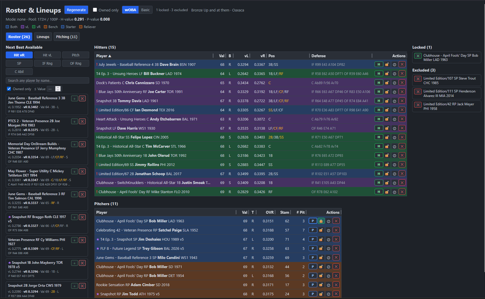
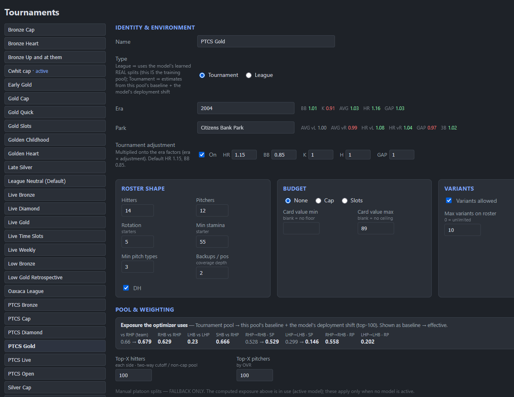
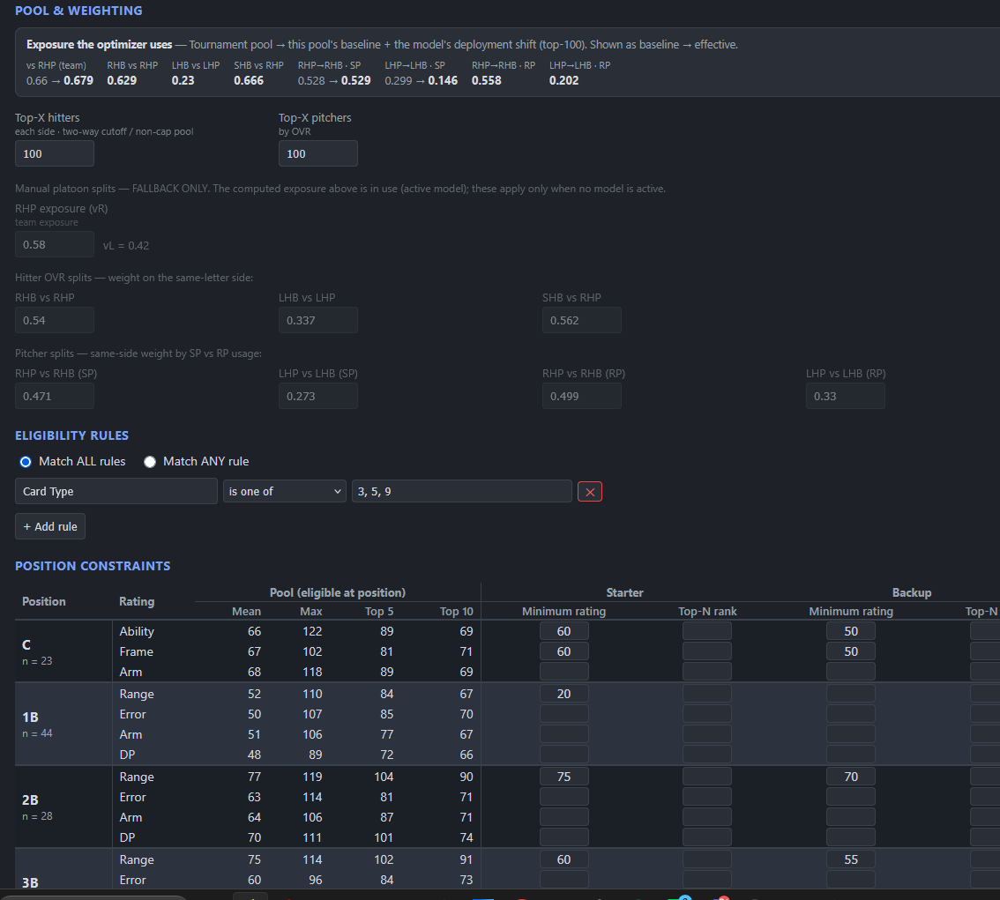
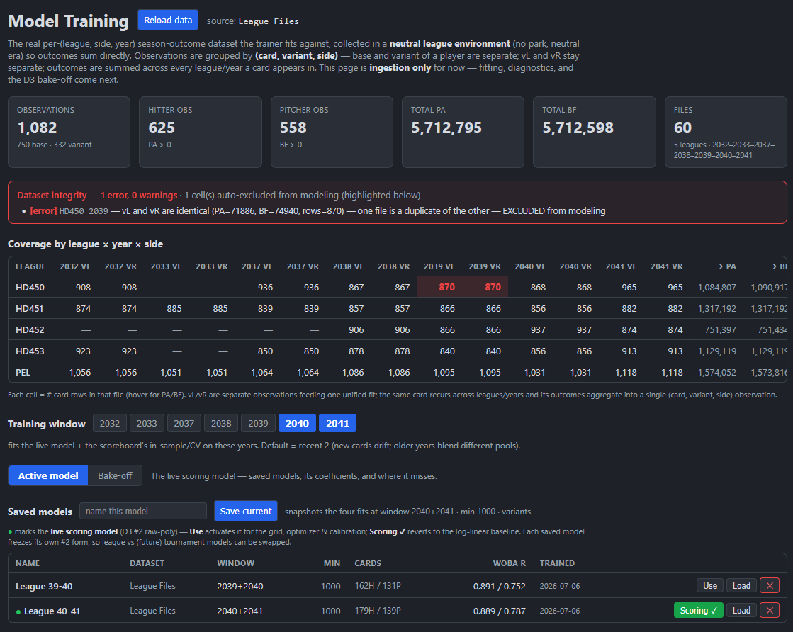
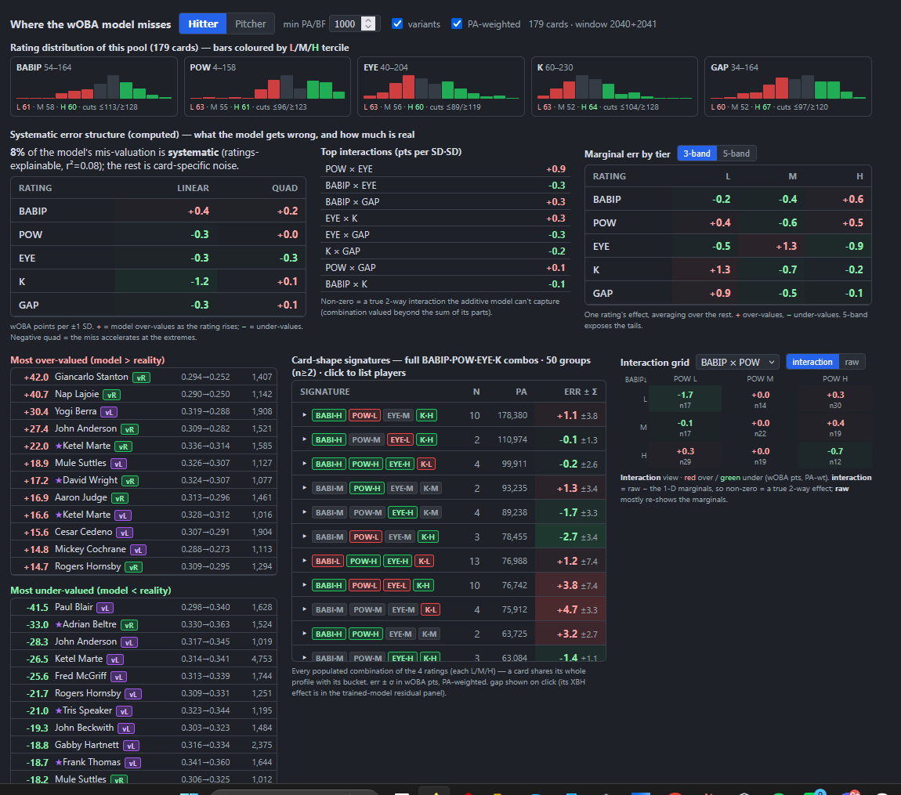
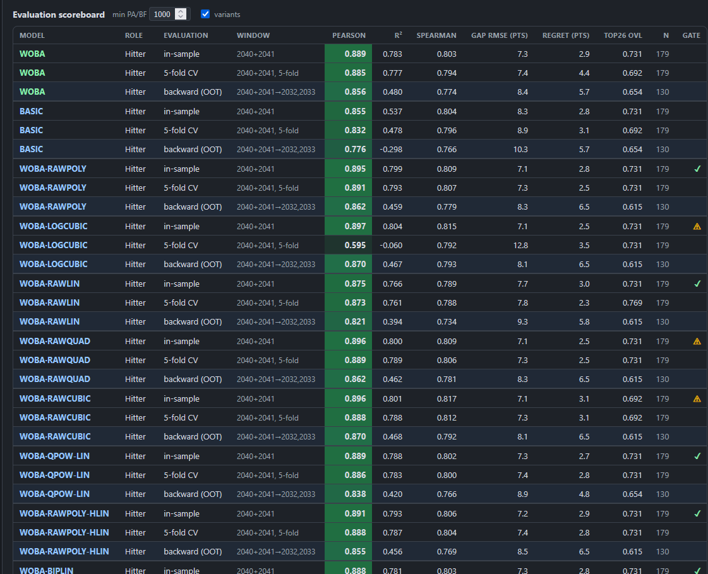
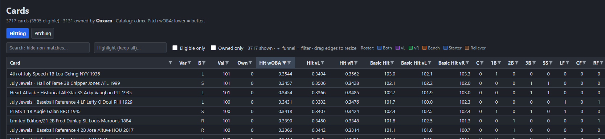

The core idea
One scoring core, computed once, consumed identically everywhere
In the original app, scoring logic lived in several places and drifted apart, which caused most of its bugs. The rebuild fixes that structurally. The grid, the optimizer, and model validation now read a card's value from one shared module, so a scoring bug can only occur in that one place. The prediction model behind that score is a swappable component, chosen by a bake-off on real season outcomes.
The app

Roster & Lineups: a generated roster, with locks, exclusions, and a next-best-available rail
Tournaments: environment, roster shape, and budget in one config object
Pool weighting, eligibility rules, and per-position constraints
MODELING Model Training: real season outcomes in, saved models out
MODELING Where the model misses: residual diagnostics by card shape
MODELING The evaluation scoreboard: the bake-off that picked the deployed model
Cards: the full catalog, thousands of cards, every one scored by the modelThe feature set
The card grid
The full catalog from a game export, scored and explorable.
- Every card scored by wOBA and Basic metrics, per side (vL/vR), both roles.
- Spreadsheet-style per-column filters, search, and highlight.
- Eligible-only and owned-only lenses; roster membership colored in.
Roster optimization
The roster is a solved optimum for the constraints, not a ranked list of suggestions.
- Solves a 26-player roster plus vL/vR lineups, rotation, and bullpen in one pass.
- Budget cap, tier-slot, and unconstrained modes on the same engine.
- Runs in-process and solves the full pool in under a second.
The hard constraints
The rules that make rosters legal are constraints in the model, not patch passes.
- A two-way player fills a hitter and a pitcher slot, freeing a bonus pick.
- Backup coverage at every position is a depth constraint.
- Eligibility rule groups and per-position rating minimums from the tournament config.
Human-in-the-loop control
The optimizer proposes; the player can overrule any of it.
- Lock, exclude, or force a role (hit, pitch, two-way) per card, then regenerate.
- A next-best-available rail for quick manual swaps.
- Biggest Upgrades surfaces the acquisitions that most improve the current roster.
Tournament configuration
Selecting a tournament is the configuration; everything reads from it.
- Era and park environments from reusable libraries, with adjustment factors.
- Roster shape, budget and variant policy, pool weighting, eligibility, position constraints.
- One home per setting, a direct fix for the old app's split-config bugs.
Accounts & ownership
The same catalog, scoped to what each account actually owns.
- Per-account ownership and card variants from a CSV import.
- An active-account selector scopes the grid, variants, and generation.
- Owned-only filtering for building from a real collection.
Model training
Player value is predicted from real game outcomes, not ratings at face value.
- Ingests real season results across multiple leagues and years, millions of plate appearances.
- Dataset integrity checks that catch and exclude bad files automatically.
- Selectable training windows and a registry of saved, comparable models.
Evaluation & diagnostics
Models earn deployment on a scoreboard, and their misses are studied.
- In-sample, cross-validation, and out-of-time evaluation with deploy gates.
- Residual diagnostics show where a model misses and whether the miss is systematic.
- The bake-off selected the deployed model over the original formulas on real outcomes.
How it was built
Parity
Rebuild the scoring core and prove it against the old app before changing anything.
- One scoring core, one language
- Old scores reproduced exactly
- Self-contained calibration
The app around it
The surfaces that consume the core, each validated before the next began.
- File-based data and config layer
- The card grid
- The optimizer and lineups
- Manual editing and overrides
The model upgrade
With trust established, replace the formulas with a model trained on real outcomes.
- Training pipeline and harness
- The bake-off across model forms
- Winner deployed; parity retired as the success metric